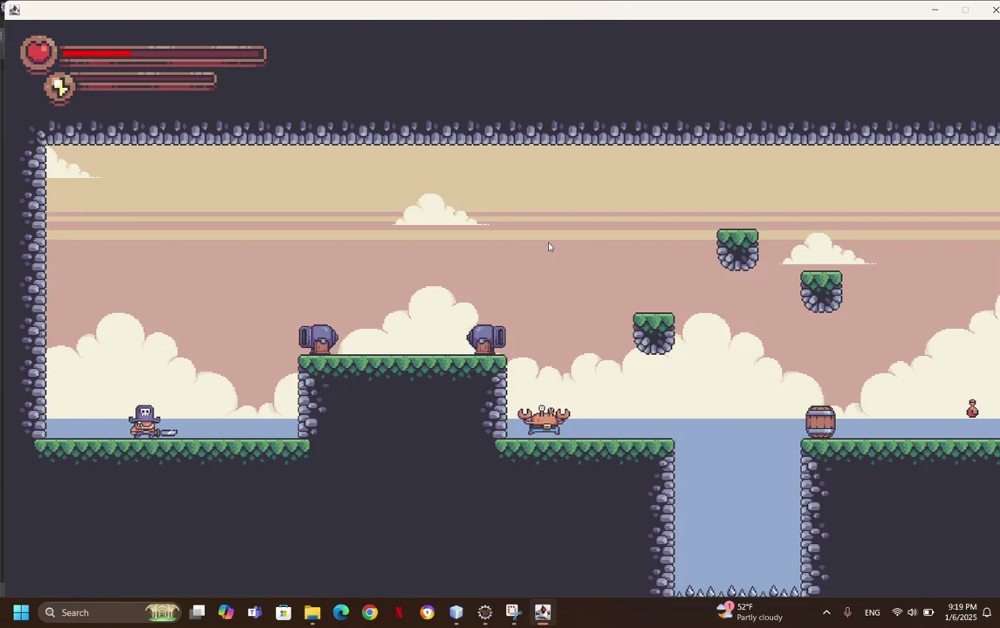
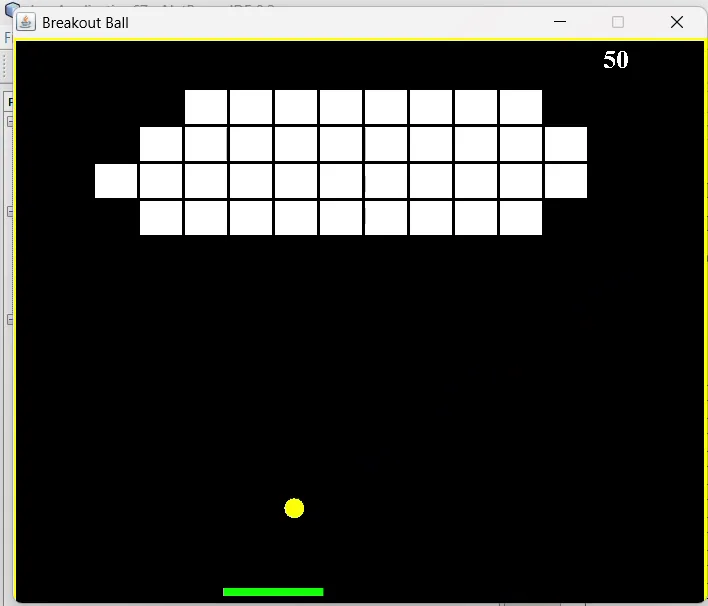
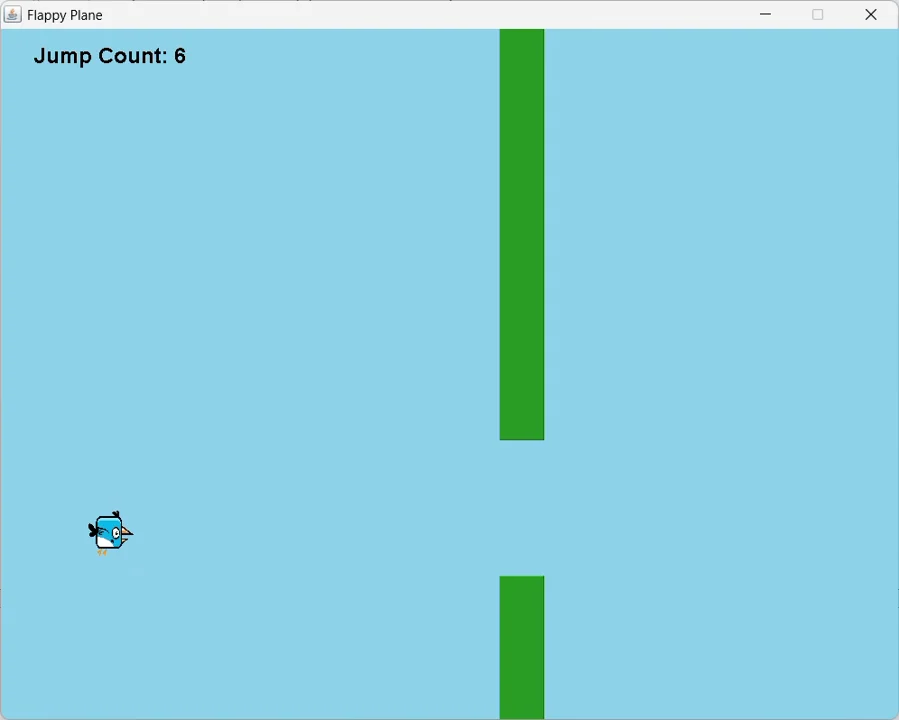

08 GAME DEVELOPMENT / ARCADE
Three little
worlds to play.
From pixel platforms to arcade reflexes — three games, three different experiments in interaction and game logic.
Explore the games ↘built with curiosity ✳
MY PLAYGROUND03✳Original gameplay recordings
Three distinct game projects
Three distinct game projects
INSERT CURIOSITY↗
CHOOSE YOUR LEVEL
My game archive.
Open a game to see the gameplay recording, its mechanics and a closer look at the experience.

01 / GAMEPLAY2D Side-Scroller
A pixel-art platform game with a main menu, character movement, platforms and a visible player HUD.
Explore game ↗

02 / GAMEPLAYBreakout Ball
An arcade game where a bouncing ball breaks a grid of blocks while a paddle keeps the ball in play.
Explore game ↗

03 / GAMEPLAYFlappy Plane
A small flying character navigates gaps between green vertical obstacles, with a jump counter and a restart screen.
Explore game ↗
✦
Each card leads to its own project page. The gameplay clips are captured from my actual games.